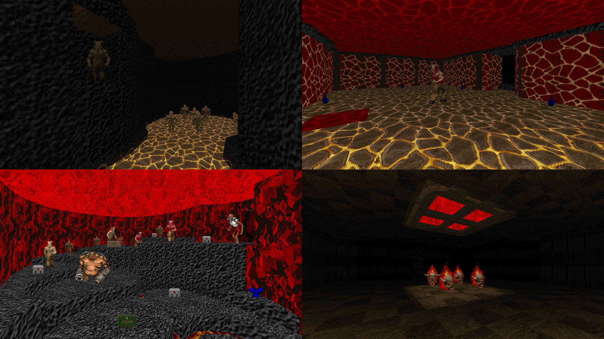

DOWNLOAD LINKS



| Year | 2013 |
| IWAD | doom2.wad |
| Source port | ZDoom |
| Game mode(s) | Single-player |
| Map(s) | MAP01 |
The Root of Madness is essentially, as the name implies, a return to my roots. My idea with this map was to recreate areas from my first (utter failure of a) wad, Prayers of Armageddon, while emulating the aesthetic and gameplay style of Hell’s Asylum.
I don’t really have much else to say about it. The level design and gameplay are both pretty much what you could expect from a mash-up of two of my earliest DOOM mapping efforts. I am quite proud of that room-over-room effect I did in one of the areas, though.